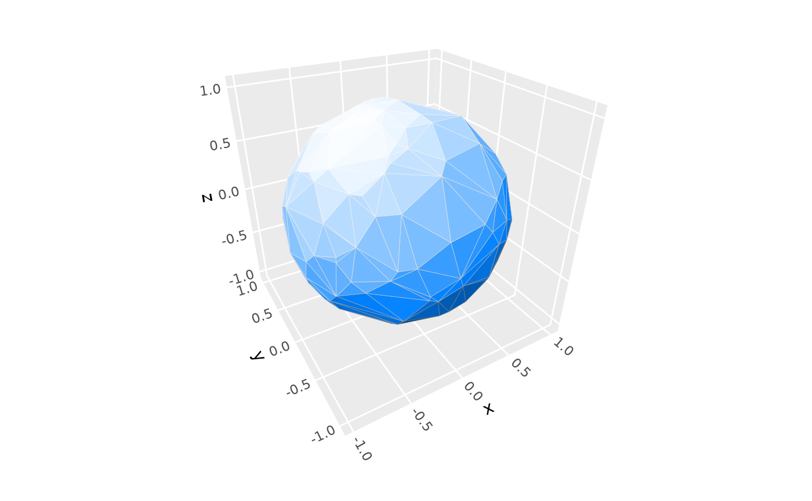
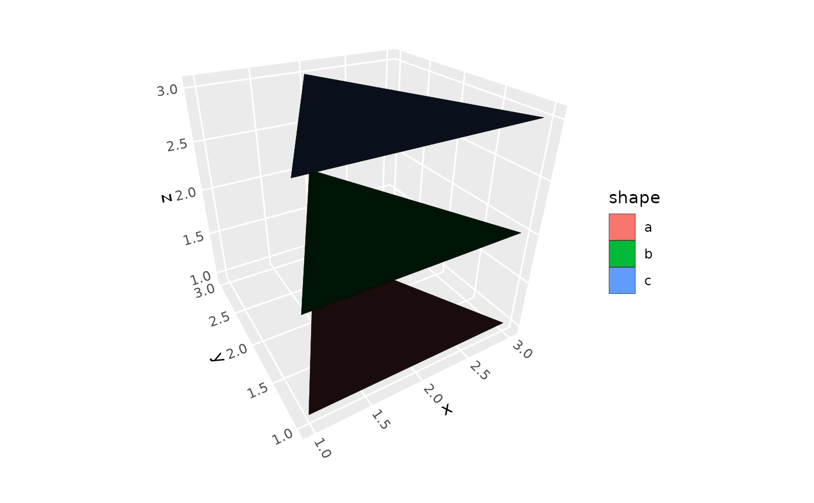

geom_polygon_3d() renders 3D polygons with proper depth sorting for realistic
3D surface visualization. It's designed to work with surface data
from stat_hull_3d() and stat_surface_3d(), as well as regular polygon data like maps.
Usage
geom_polygon_3d(
mapping = NULL,
data = NULL,
stat = StatIdentity3D,
position = "identity",
...,
na.rm = FALSE,
show.legend = NA,
inherit.aes = TRUE
)Arguments
- mapping
Set of aesthetic mappings created by
aes().- data
The data to be displayed in this layer.
- stat
The statistical transformation to use on the data. Defaults to StatIdentity3D for proper discrete scale handling and group preservation.
- position
Position adjustment, defaults to "identity".
- ...
Other arguments passed on to
layer().- na.rm
If
FALSE, missing values are removed with a warning.- show.legend
Logical indicating whether this layer should be included in legends.
- inherit.aes
If
FALSE, overrides the default aesthetics.
Aesthetics
geom_polygon_3d() requires:
x: X coordinate
y: Y coordinate
z: Z coordinate (for depth sorting)
group: Polygon grouping variable
And understands these additional aesthetics:
fill: Polygon fill colorcolour: Border colorlinewidth: Border line widthlinetype: Border line typealpha: Transparencyorder: Vertex order within polygons (for proper polygon construction)
Examples
# Typically used via stats like stat_surface_3d() or stat_hull_3d()
ggplot(sphere_points, aes(x, y, z)) +
stat_hull_3d(method = "convex", fill = "dodgerblue",
light = lighting(blend = "fill", blend_mode = "hsl")) +
coord_3d()

# Can be used directly with properly structured data
triangles <- data.frame(x = rep(c(1, 2, 3), 3),
y = rep(c(1, 3, 1), 3),
z = rep(1:3, each = 3),
shape = rep(letters[1:3], each = 3))
ggplot(triangles, aes(x, y, z, fill = shape)) +
geom_polygon_3d(color = "black") +
coord_3d()
